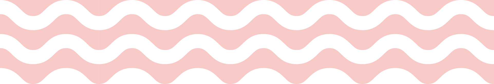
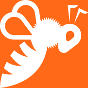
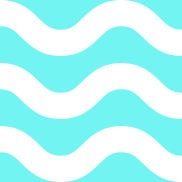
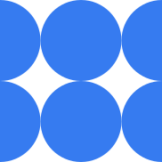

¿Qué son Soluciones Basadas en la Naturaleza?
Es un enfoque que promueve acciones que protegen, conservan, restauran, usan y gestionan de manera sostenible los ecosistemas, y que a su vez generan beneficios en las personas y la biodiversidad.

¿Qué son las medidas de Soluciones Basadas en la Naturaleza priorizadas en SolNatura?
Son medidas que integran un portafolio de 20 SbN por cada departamento (Córdoba, Huila y Santander) para enfrentar el cambio climático (adaptación y mitigación) y la pérdida de biodiversidad, contribuyendo a la visión de desarrollo territorial sostenible de cada departamento. A su vez, las 20 medidas SbN priorizadas por cada departamento son un referente para el proceso de convocatoria pública de SolNatura que seleccionará 24 proyectos con enfoque de SbN para ser implementados en los 3 departamentos. Estas medidas son producto de una de las actividades de SolNatura lideradas por The Nature Conservancy.


Medidas SbN
Priorizadas
Agroforestería (sistemas agroforestales-SAF, sistemas silvopastoriles-SSP, sistemas agrosilvopastoriles-SASP)

Apicultura / meliponicultura sostenible

Arborización y corredores verdes urbanos
Conservación y manejo sostenible de bosques
Conservación y manejo sostenible de humedales
Conservación y manejo sostenible de manglares
La conservación y manejo sostenible de manglares favorecen la adaptación de las comunidades costeras a los fenómenos meteorológicos extremos como el aumento del nivel del mar y las inundaciones causadas por el cambio climático (UNESCO, 2018). También, favorece la mitigación del cambio climático, ya que los manglares son importantes sumideros de carbono, además de proporcionar otros servicios ecosistémicos como la regulación hidrológica, la retención de nutrientes y sedimentos, y el mantenimiento de la biodiversidad (IPCC, 2022). Esta medida incluye prácticas para preservar, manejar y usar de forma sostenible los manglares.
Conservación y manejo sostenible de páramos
Conservación y uso sostenible del suelo
Conservar un suelo se refiere a llevar a cabo actividades que mantengan o aumenten su salud, principalmente en áreas afectadas o propensas a la degradación, esto incluye la prevención o la reducción de la erosión, compactación y la salinidad, su conservación o drenaje; su mantenimiento o su mejoramiento de la fertilidad (Soto, 2021). Al conservar el suelo, no solo se apoya la producción de alimentos, sino también el almacenamiento y suministro de agua limpia, el mantenimiento de la biodiversidad, el secuestro carbono y el aumento de la resiliencia en un clima cambiante (FAO, 2017, p. 3)
Declaratoria o manejo de áreas protegidas

Diversificación de cultivos
Mejoramiento de la conectividad hidrológica
Nominación y manejo de otras medidas efectivas de conservación basadas en áreas
Plantaciones forestales protectoras – productoras de pequeña escala
Rehabilitación de áreas degradadas
La rehabilitación de áreas degradas consiste en el inicio o aceleración del proceso de restablecimiento del estado de conservación y la prestación de servicios ecosistémicos en las áreas degradadas, dañadas o destruidas (WRI, 2020) con el objetivo de generar un ecosistema que representa una mejoría para el medio ambiente, conservando al máximo posible la funcionalidad del ecosistema original, pero no de su composición (MinAmbiente, 2015b). Esta medida SbN contribuye al mejoramiento de zonas degradadas ambientalmente, también contribuye al secuestro de carbono mediante la plantación de especies y a la adaptación al cambio climático mediante la reducción del riesgo de desastres (MinAmbiente, 2015b).

Restauración de bosques

Rehabilitación de áreas degradadas
Restauración de la conectividad del paisaje
La restauración de la conectividad del paisaje implica el inicio o aceleración del proceso de recuperación de ecosistemas o agroecosistemas que permiten el vínculo o conexión de los elementos del paisaje que han sido degradados, dañados o destruidos (WRI, 2020), de tal forma que puedan recuperar parcialmente su estructura y composición (Leija & Mendoza, 2021). Su aplicación se da en paisajes fragmentados que impiden el movimiento de especies y la pérdida de beneficios de la naturaleza (Imbach et al., 2013; Lejia & Mendoza, 2021). La restauración busca volver el ecosistema a su condición original, o por lo menos, mejorar su funcionalidad, composición y salud ecológica (rehabilitación).
Restauración de manglares

Restauración de nacimientos de agua y cuencas abastecedoras
Restauración de páramos
Esta medida SbN implica el inicio o aceleración del proceso de recuperación de los ecosistemas de páramo que han sido degradados, dañados o destruidos (WRI, 2020). La restauración busca volver el ecosistema a su condición original, o por lo menos, mejorar su funcionalidad, composición y salud ecológica (rehabilitación). Las estrategias de restauración ecológica deben ser formuladas en función del escenario de degradación del ecosistema y deben promover la recuperación de la estructura, composición y función con técnicas que incorporen la representatividad de las comunidades propias del páramo, teniendo en cuenta el diagnóstico inicial del estado del ecosistema y partiendo, en caso de ser necesario, de un reacondicionamiento del suelo (Cabrera & Ramírez, 2014). Su aplicación se da sobre los límites de páramos donde se encuentren actividades relacionadas con la agricultura principalmente de papa y cebolla, la ganadería extensiva, las quemas intencionadas, los incendios espontáneos en época seca, especies invasoras, disturbios por minería, entre otras (CRC, 2017; Teutli-Hernández et al., 2020).